⚠ Read this first: Ataecina needs additional software.
untrunc, FFmpeg and PhotoRec are not included with Ataecina. Download them from their official websites and put them in the same folder as Ataecina.exe. Without them, repair does not start and the PhotoRec search is not available. See section 3.
1. Overview
Ataecina brings lost footage back. It helps in two situations:
Recovery: a camera card was emptied, formatted by mistake, or Windows can no longer read it. Ataecina reads the card itself (exFAT and FAT32), finds deleted files and those of a reformatted card, can restore the format of a damaged card, and can call on PhotoRec for the hardest cases.
Repair: a MOV or MP4 clip no longer opens, often because the camera shut down while recording. With untrunc and a healthy reference clip, Ataecina rebuilds the missing index.
The original files and the card are never modified, unless you explicitly ask to restore the format (section 7). Ataecina is free, open source (MIT License), for Windows.
Ataecina is a goddess of the ancient Iberian Peninsula, often interpreted as "the Reborn". Like her, this software brings back to light images that were thought to be lost.
No install: put it in a folder of your own, for example C:\Ataecina\
Ataecina_x.y.z_x64-setup.exe or .msi
Standard installer
Our advice: the portable version. You keep it in its own folder and put the additional software right next to it (section 3). With the installer, the executable lives in the installation folder (usually under C:\Program Files\), where Windows asks for administrator rights to add files.
First launch. The app is not signed yet, so Windows shows a warning once. Click "More info", then "Run anyway".
Administrator rights. Reading a card directly requires administrator rights. When needed, Ataecina shows a banner and offers to restart as administrator; Windows asks you to confirm. The admin pill, top right, turns green.
3. Installing the additional software (required)
Ataecina drives three free programs that are not shipped with it. They remain the property of their authors: always download them from their official website.
the wholetestdisk-x.y folder (it contains photorec_win.exe and its files)
Where to put them
Put them in the same folder as Ataecina.exe. That is where Ataecina looks first:
C:\Ataecina\
├── Ataecina.exe
├── untrunc.exe ← with the .dll files shipped with untrunc
├── *.dll
├── ffmpeg.exe
├── ffprobe.exe
└── testdisk-7.2\ ← the TestDisk folder as it is
├── photorec_win.exe
└── …
If you prefer to keep things tidy, a tools subfolder next to Ataecina.exe also works, with one folder per program:
C:\Ataecina\
├── Ataecina.exe
└── tools\
├── untrunc\ (untrunc.exe and its .dll files)
├── ffmpeg\bin\ (ffmpeg.exe, ffprobe.exe)
└── testdisk-7.2\ (photorec_win.exe…)
Two rules:
Never separate a program from its .dll files. untrunc and PhotoRec do not start without them. Copy the whole content of the archive, not just the .exe.
Unzip the archives (right-click, "Extract All"): Ataecina does not look inside a .zip file.
Ataecina also finds tools already installed in the Windows PATH. And if you keep them somewhere else, you can set their location by hand: the untrunc.exe and ffmpeg folder fields in the Repair tab, the photorec_win.exe field of the PhotoRec search.
Checking that everything is detected
Top right, pills show the state of each tool: green = found, red = not found.
Without the tools, the Repair tab shows red pills (1) and the untrunc.exe field shows that nothing was found (2):
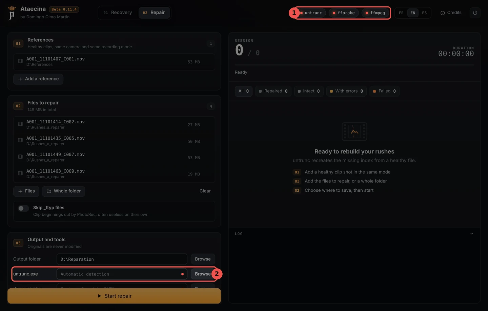
If you start the repair anyway, Ataecina stops with a clear message (1), for example "untrunc.exe not found":
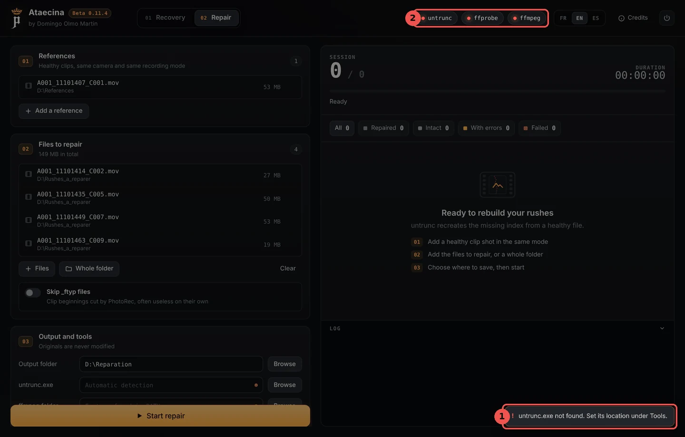
Once the tools are next to the executable, the pills turn green (1) and the path found is shown (2). If they stay red, close and restart Ataecina.
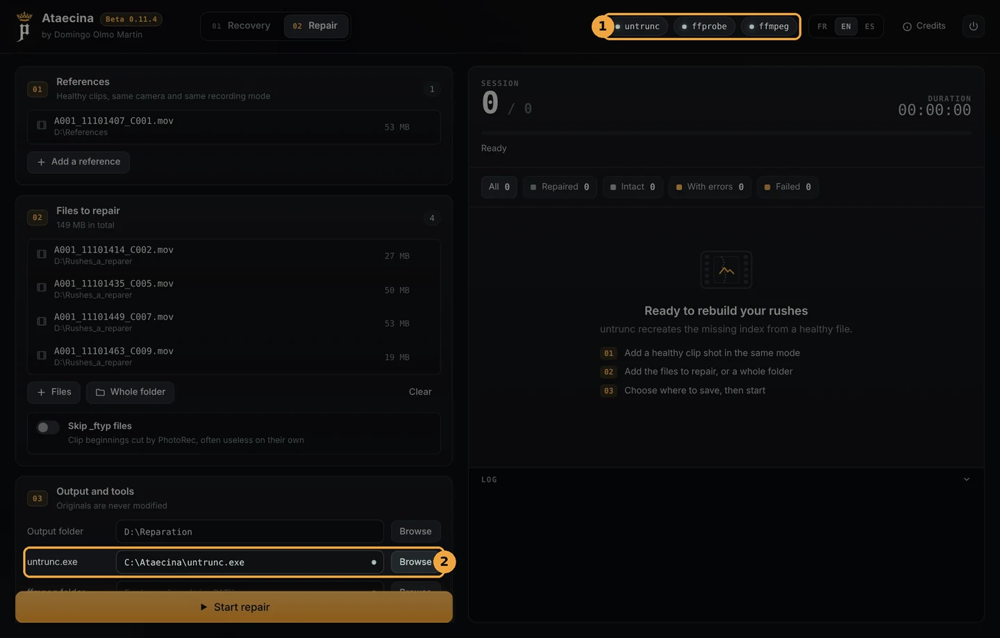
In the Recovery tab, the photorec pill works the same way:
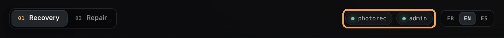
What works without the tools: reading the card, the deep search, copying the files found, restoring the format and creating a card image. What does not: the PhotoRec search (without PhotoRec) and the whole repair (without untrunc and FFmpeg).
4. Before you start: good habits
Stop writing to the card. Do not shoot on it, do not format it, do not copy anything to it. Every write can overwrite a clip that could still be recovered.
If Windows offers to format the card, say no.
Always choose a destination on another drive than the card being analysed. Ataecina reminds you below the Destination field.
For a damaged card, create an image first (section 8): the card is read only once, and all the work then runs on the image.
5. Recovery: reading the card
This is the method to try first. Ataecina reads the card's exFAT or FAT32 file system itself, without writing anything to it, and finds the original folders and names, including deleted files.
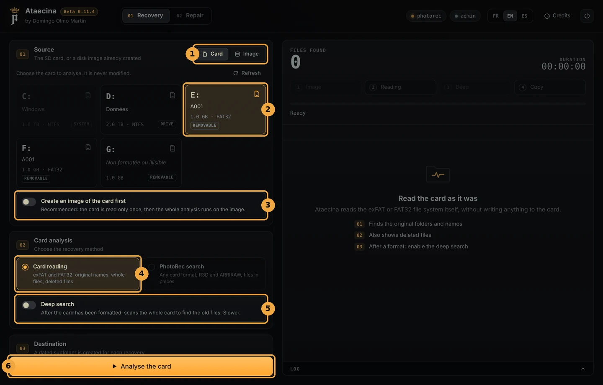
Source: Card for a card in the reader, Image for a disk image already created.
Choose the card in the list. System drives are greyed out. If the card does not show up, click Refresh.
Create an image of the card first: recommended if the card seems damaged (section 8).
Method: Card reading.
Deep search: only after a format (section 6).
Check the Destination (a dated subfolder is created there for each recovery), then click Analyse the card.
Choosing the files to copy
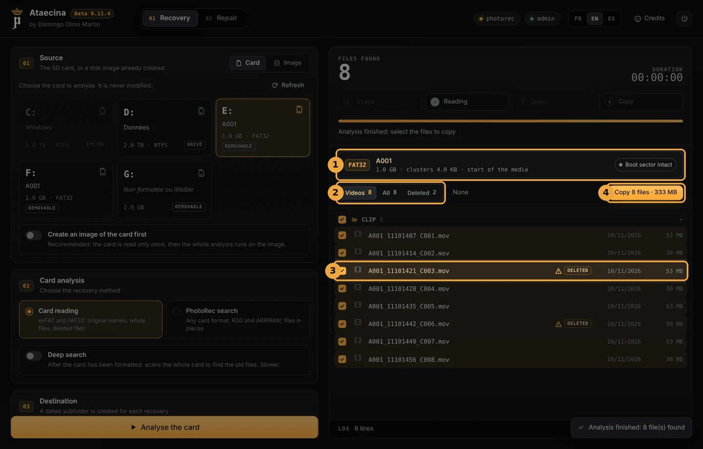
The volume card: format (exFAT or FAT32), name, size, and the state of the boot sector.
The filters: Videos, All, Deleted (and Recovered after a deep search). None / All unticks or ticks everything.
Deleted files are marked DELETED, with a warning triangle: their data may have been partly overwritten since.
Copy copies the ticked files to the destination. The button shows their number and size.
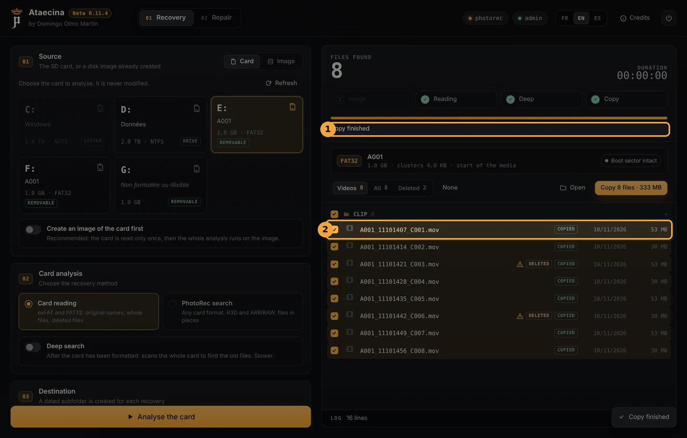
When the copy is finished (1), each file has a status (2): COPIED, TO REPAIR (the file was copied but does not play) or ERROR. Open shows the copy folder.
The Send videos to repair option (under Destination) adds the unplayable videos straight to the list in the Repair tab.
6. Recovery: card formatted by mistake
After a format, the card looks empty: the simple reading finds nothing. Turn on the deep search and run the analysis again.
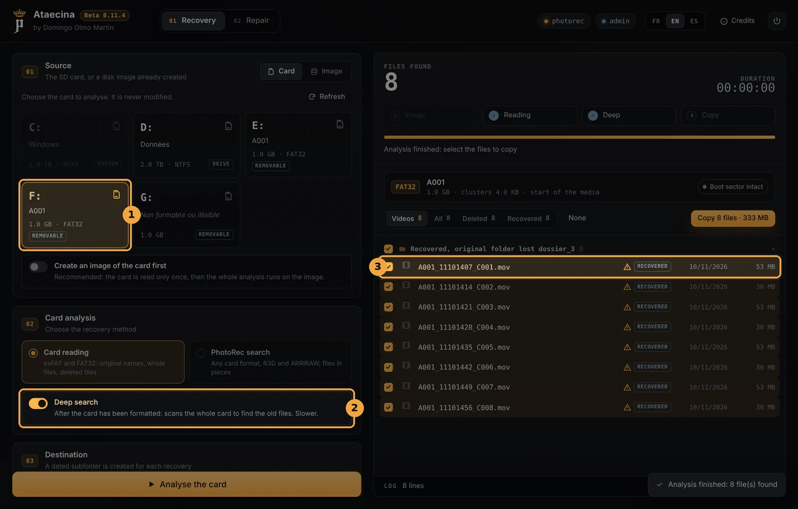
Choose the formatted card.
Turn on Deep search. Ataecina scans the whole card for the old file entries. It takes longer.
The files found are marked RECOVERED and grouped under "Recovered, original folder lost". Their original names are often kept, but the original folder is lost, and their data is assumed to be in one piece: check them after copying.
If the deep search finds nothing, try the PhotoRec search (section 8).
7. Recovery: unreadable card, restoring the format
When Windows no longer recognises a card ("the disk is not formatted"), its boot sector is often damaged. exFAT and FAT32 cards keep a backup copy of it: Ataecina uses it to read the card anyway.
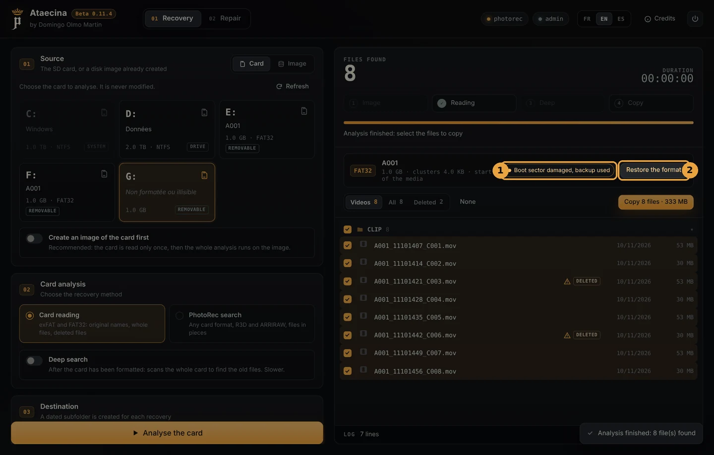
The volume card reads Boot sector damaged, backup used. The files are listed normally: copy the ones that matter first.
Restore the format rewrites the boot sector from its backup copy, so that Windows can read the card again.
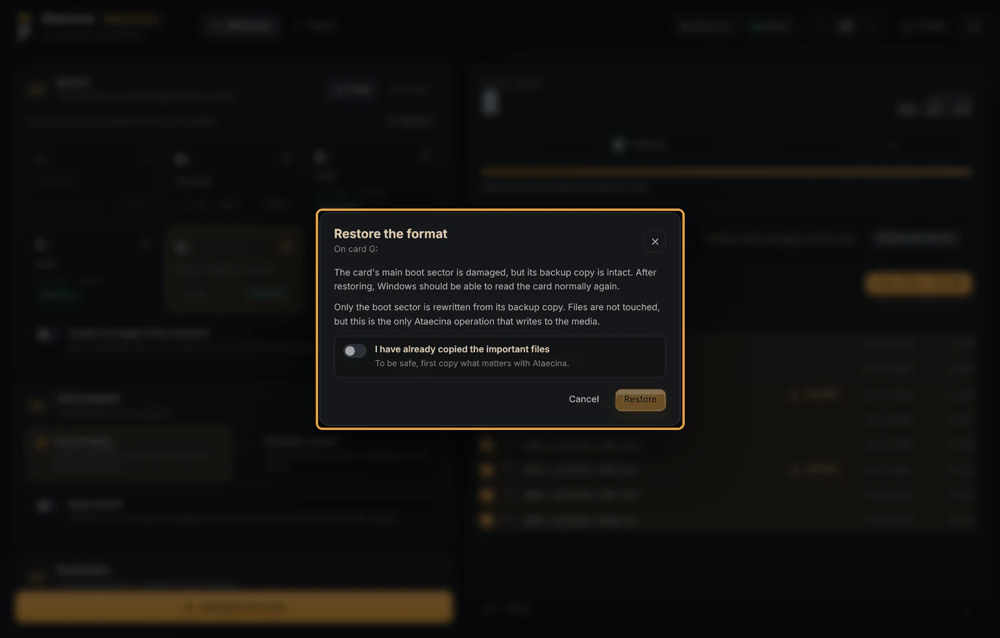
This is the only Ataecina operation that writes to the card. Only the boot sector is rewritten, the files are not touched. To be safe, Ataecina asks you to confirm that you have already copied the important files before the Restore button is enabled.
8. Recovery: card image and PhotoRec search
Creating a card image
A card that is starting to fail may not survive several reads. Turn on Create an image of the card first: Ataecina copies it entirely into an image file, reading the healthy areas first and the damaged ones last, following the GNU ddrescue method. An interrupted copy can be resumed. The whole analysis then runs on the image, and the card can be put away.
Allow as much free space as the size of the card. The Image folder field lets you choose where to save it (empty = the destination folder).
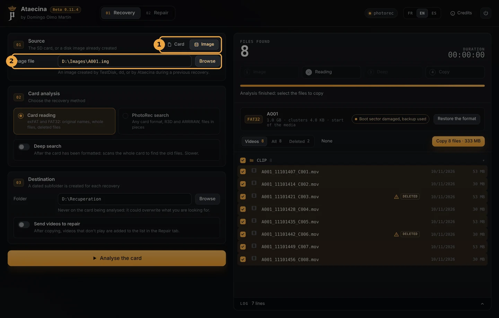
To analyse an existing image, choose Image (1) in the source, then give the image file (2): an image created by Ataecina, TestDisk or dd.
PhotoRec search
For cases where reading the card is not enough: destroyed file system, unknown card format, files scattered in pieces. PhotoRec searches for videos directly in the card's raw data. PhotoRec must be installed (section 3).
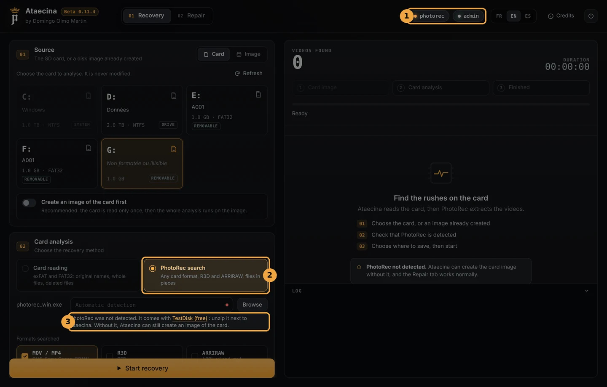
The photorec pill must be green.
Choose the PhotoRec search method.
If PhotoRec is not detected, Ataecina says so here, with a link to TestDisk. You can also give the location of photorec_win.exe in the field above.
Choose the formats searched (MOV / MP4, R3D, ARRIRAW), then click Start recovery. Videos appear as they are found. PhotoRec does not recover the original names, and files in pieces often need repairing: at the end, Ataecina offers to send the MOV files to the Repair tab.
9. Repairing broken MOV and MP4 files
A MOV or MP4 file holds the images and an index that says where they are. If the camera shuts down while recording, the index is never written and the file no longer opens. untrunc rebuilds that index based on a healthy reference clip. You need untrunc and FFmpeg (section 3).
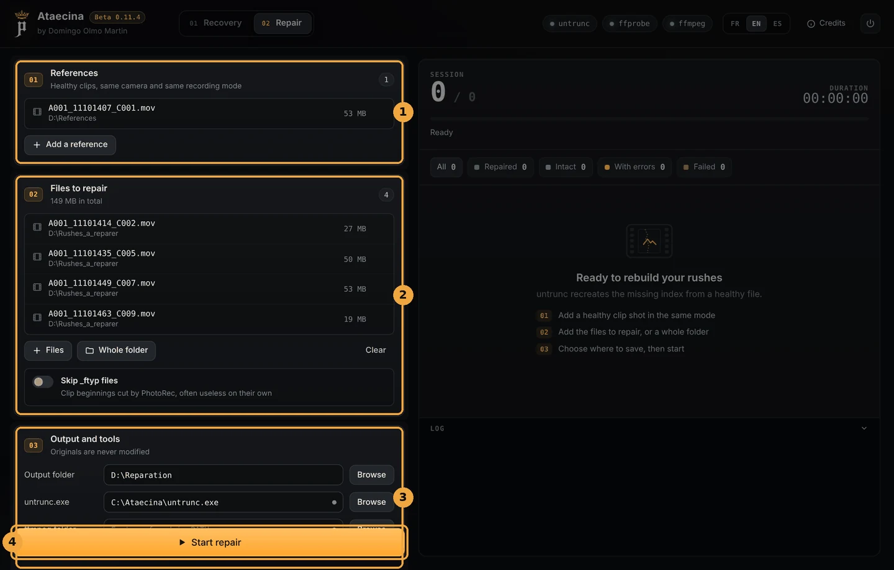
References: add one or more healthy clips, a few seconds is enough, shot with the same camera and the same recording mode (resolution, frame rate, codec, bitrate) as the lost files. This is the single most important condition for success.
Files to repair: add files one by one (Files) or a whole folder (Whole folder, for example PhotoRec's output). The Skip _ftyp files option leaves out clip beginnings cut by PhotoRec, which are often useless on their own.
Output and tools: the output folder where the repaired files are written, and the location of the tools if Ataecina does not find them on its own. Full check decodes each repaired file entirely with ffmpeg to count errors (slower, safer).
Click Start repair.
For each file, Ataecina first checks whether it already plays. If not, it tries untrunc with each reference, in normal mode then step-by-step mode, and keeps the best result.
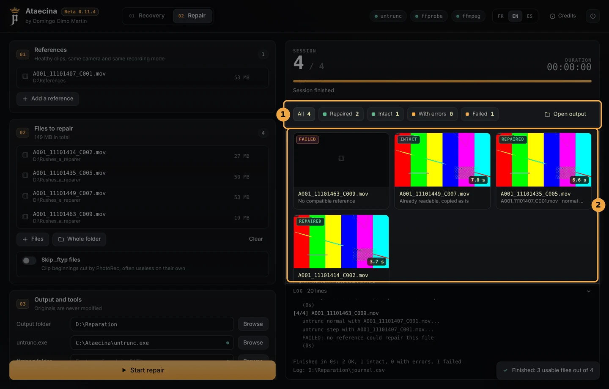
The summary: Repaired, Intact, With errors, Failed. Clicking a category filters the results. Open output shows the output folder.
A thumbnail for each file, with the duration recovered:
REPAIRED: rebuilt, saved as <name>_repare.mov;
INTACT: already played, copied as is;
ERRORS: rebuilt, but decoding errors remain;
FAILED: no reference could repair it. Try another reference, shot in exactly the same mode.
Originals are never modified. The output folder also holds journal.csv (the result for each file, to open in a spreadsheet) and a logs folder with the details of every untrunc attempt.
10. FAQ
Repair does not start: "untrunc.exe not found".
untrunc is not next to Ataecina.exe, or its .dll files are missing. See section 3.
The photorec pill stays red.
The TestDisk folder must be unzipped and placed, whole, next to Ataecina.exe (or in tools). Otherwise, give the path of photorec_win.exe in the field provided.
My card does not show up in the list.
Click Refresh. Check that Ataecina is running as administrator. If Windows does not see the card at all (not even in Explorer), the reader or the card may be at fault: try another reader.
Does Ataecina run on a Mac?
No, Ataecina is Windows only.
Which cards can Ataecina read?
Card reading handles exFAT and FAT32, the formats of almost every camera card. For other cases, the PhotoRec search works with any card format.
A repaired file is shorter than expected.
untrunc recovers everything usable. If the end of the file was never written to the card, it cannot be rebuilt.
11. Disclaimer and license
Ataecina is a tool to help recover and repair media. It is provided "as is", without any warranty: recovery is never guaranteed, and the author cannot be held responsible for any loss, corruption or deletion of data. For irreplaceable footage on a physically damaged card, contact a data recovery professional before doing anything.
untrunc, FFmpeg and TestDisk / PhotoRec remain the property of their authors and are distributed under their own licences.
⚠ À lire avant tout : Ataecina a besoin de logiciels complémentaires.
untrunc, FFmpeg et PhotoRec ne sont pas fournis avec Ataecina. Téléchargez-les sur leur site officiel et placez-les dans le même dossier que Ataecina.exe. Sans eux, la réparation ne démarre pas et la recherche PhotoRec n'est pas disponible. Voir la section 3.
1. Présentation
Ataecina ramène les images perdues. Il sert dans deux situations :
Récupération : une carte caméra a été vidée, formatée par erreur, ou Windows ne la lit plus. Ataecina lit lui-même la carte (exFAT et FAT32), retrouve les fichiers supprimés et ceux d'une carte reformatée, peut restaurer le format d'une carte abîmée, et sait faire appel à PhotoRec pour les cas les plus difficiles.
Réparation : un rush MOV ou MP4 ne s'ouvre plus, souvent parce que la caméra s'est éteinte en plein enregistrement. Avec untrunc et un rush sain de référence, Ataecina reconstruit l'index manquant.
Les fichiers d'origine et la carte ne sont jamais modifiés, sauf si vous demandez explicitement la restauration du format (section 7). Ataecina est gratuit, open source (licence MIT), pour Windows.
Ataecina est une déesse de la péninsule ibérique antique, souvent interprétée comme « la Renaissante ». Comme elle, ce logiciel ramène à la lumière des images que l'on croyait perdues.
Sans installation : placez-le dans un dossier à vous, par exemple C:\Ataecina\
Ataecina_x.y.z_x64-setup.exe ou .msi
Installeur classique
Notre conseil : la version portable. Vous la rangez dans un dossier dédié, et vous mettez les logiciels complémentaires juste à côté (section 3). Avec l'installeur, l'exécutable se trouve dans le dossier d'installation (en général sous C:\Program Files\), où Windows demande les droits administrateur pour ajouter des fichiers.
Premier lancement. L'application n'est pas encore signée : Windows affiche un avertissement une fois. Cliquez sur « Informations complémentaires », puis sur « Exécuter quand même ».
Droits administrateur. Lire une carte directement demande les droits administrateur. Si besoin, Ataecina affiche un bandeau et propose de se relancer en administrateur ; Windows vous demande alors de confirmer. La pastille admin, en haut à droite, passe au vert.
3. Installer les logiciels complémentaires (indispensable)
Ataecina pilote trois logiciels gratuits qui ne sont pas livrés avec lui. Ils restent la propriété de leurs auteurs : téléchargez-les toujours depuis leur site officiel.
le dossier testdisk-x.yentier (il contient photorec_win.exe et ses fichiers)
Où les mettre
Placez-les dans le même dossier que Ataecina.exe. C'est l'endroit où Ataecina les cherche en premier :
C:\Ataecina\
├── Ataecina.exe
├── untrunc.exe ← avec les fichiers .dll livrés avec untrunc
├── *.dll
├── ffmpeg.exe
├── ffprobe.exe
└── testdisk-7.2\ ← le dossier de TestDisk tel quel
├── photorec_win.exe
└── …
Si vous préférez garder les choses rangées, un sous-dossier tools à côté de Ataecina.exe fonctionne aussi, avec un dossier par logiciel :
C:\Ataecina\
├── Ataecina.exe
└── tools\
├── untrunc\ (untrunc.exe et ses .dll)
├── ffmpeg\bin\ (ffmpeg.exe, ffprobe.exe)
└── testdisk-7.2\ (photorec_win.exe…)
Deux règles à respecter :
Ne séparez jamais un logiciel de ses fichiers .dll. untrunc et PhotoRec ne démarrent pas sans eux. Copiez tout le contenu de l'archive, pas seulement le .exe.
Décompressez les archives (clic droit, « Extraire tout ») : Ataecina ne lit pas l'intérieur d'un fichier .zip.
Ataecina trouve aussi les outils déjà installés dans le PATH de Windows. Et si vous les avez rangés ailleurs, vous pouvez indiquer leur emplacement à la main : champs untrunc.exe et Dossier ffmpeg de l'onglet Réparation, champ photorec_win.exe de la recherche PhotoRec.
Vérifier que tout est détecté
En haut à droite, des pastilles indiquent l'état de chaque outil : verte = trouvé, rouge = introuvable.
Sans les outils, l'onglet Réparation affiche des pastilles rouges (1) et le champ untrunc.exe signale qu'il ne trouve rien (2) :
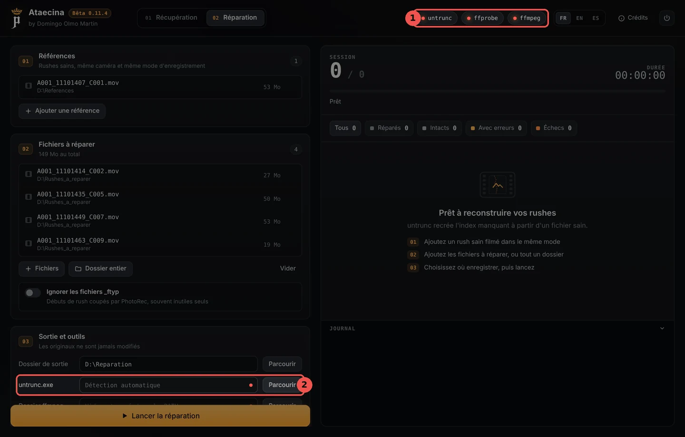
Si vous lancez quand même la réparation, Ataecina s'arrête avec un message clair (1), par exemple « untrunc.exe introuvable » :
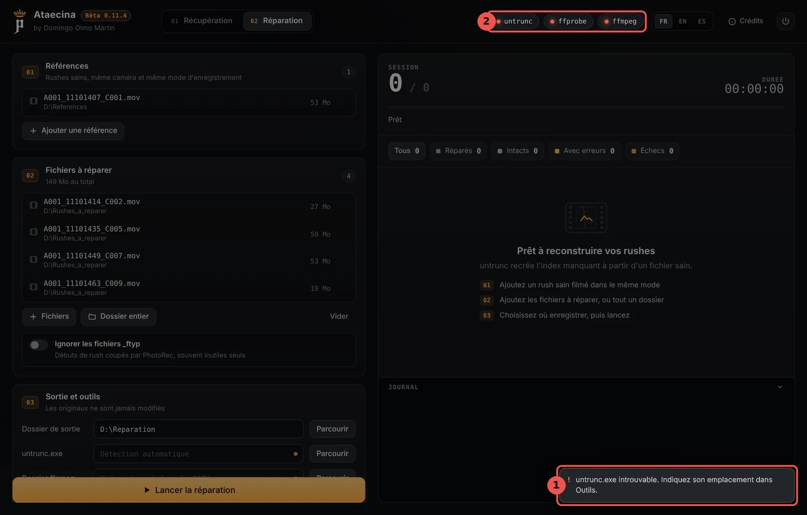
Une fois les outils placés à côté de l'exécutable, les pastilles passent au vert (1) et le chemin trouvé s'affiche (2). Si elles restent rouges, fermez et relancez Ataecina.
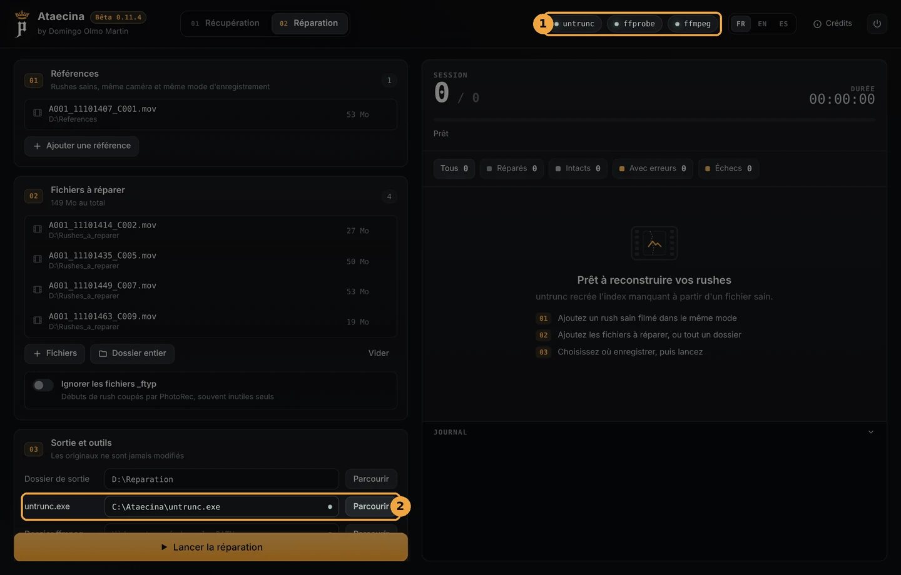
Dans l'onglet Récupération, la pastille photorec fait de même :
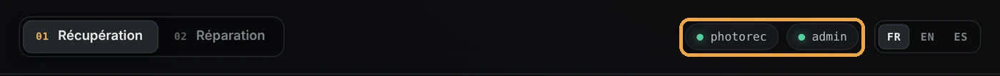
Ce qui marche sans les outils : la lecture de la carte, la recherche approfondie, la copie des fichiers retrouvés, la restauration du format et la création d'une image de carte. Ce qui ne marche pas : la recherche PhotoRec (sans PhotoRec) et toute la réparation (sans untrunc et FFmpeg).
4. Avant de commencer : les bons réflexes
N'écrivez plus rien sur la carte. Ne filmez plus avec, ne la formatez pas, ne copiez rien dessus. Chaque écriture peut écraser un rush encore récupérable.
Si Windows propose de formater la carte, refusez.
Choisissez toujours une destination sur un autre disque que la carte analysée. Ataecina le rappelle sous le champ Destination.
Pour une carte abîmée, créez d'abord une image (section 8) : la carte n'est lue qu'une fois, et tout le travail se fait ensuite sur l'image.
5. Récupération : lire la carte
C'est la méthode à essayer en premier. Ataecina lit lui-même le système de fichiers exFAT ou FAT32 de la carte, sans rien y écrire, et retrouve les dossiers et les noms d'origine, y compris les fichiers supprimés.
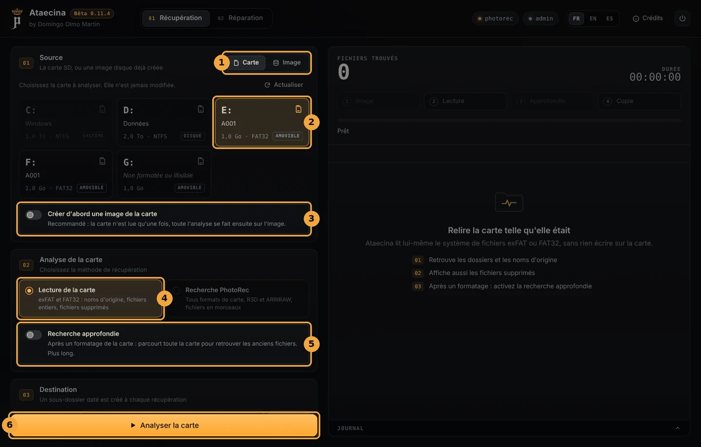
Source : Carte pour une carte insérée dans le lecteur, Image pour une image disque déjà créée.
Choisissez la carte dans la liste. Les disques système sont grisés. Si la carte n'apparaît pas, cliquez sur Actualiser.
Créer d'abord une image de la carte : recommandé si la carte semble abîmée (section 8).
Méthode : Lecture de la carte.
Recherche approfondie : seulement après un formatage (section 6).
Vérifiez la Destination (un sous-dossier daté y est créé à chaque récupération), puis cliquez sur Analyser la carte.
Choisir les fichiers à copier
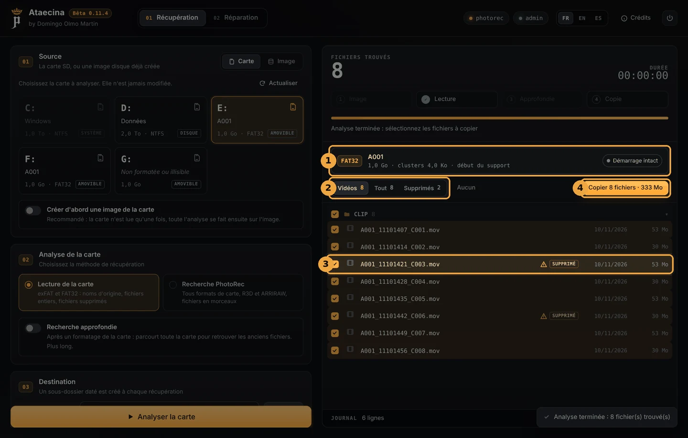
La fiche du volume : format (exFAT ou FAT32), nom, taille, et l'état du secteur de démarrage.
Les filtres : Vidéos, Tout, Supprimés (et Retrouvés après une recherche approfondie). Aucun / Tous décoche ou coche tout.
Les fichiers supprimés sont marqués SUPPRIMÉ, avec un triangle d'avertissement : leurs données ont pu être en partie réécrites depuis.
Copier copie les fichiers cochés vers la destination. Le bouton indique leur nombre et leur taille.
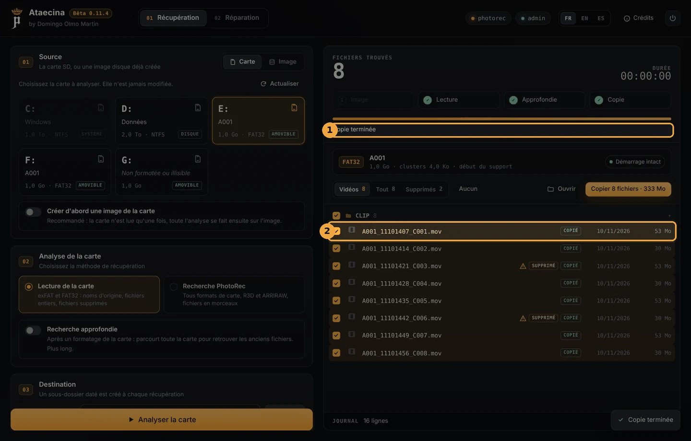
À la fin de la copie (1), chaque fichier porte un statut (2) : COPIÉ, À RÉPARER (le fichier a été copié mais ne se lit pas) ou ERREUR. Ouvrir affiche le dossier de copie.
L'option Envoyer les vidéos vers la réparation (sous Destination) ajoute directement les vidéos illisibles à la liste de l'onglet Réparation.
6. Récupération : carte formatée par erreur
Après un formatage, la carte paraît vide : la lecture simple ne trouve rien. Activez la recherche approfondie et relancez l'analyse.
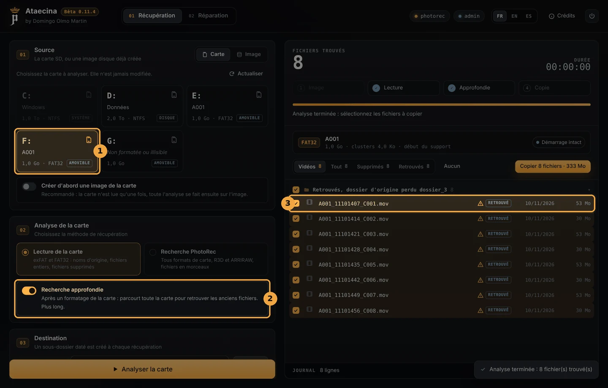
Choisissez la carte formatée.
Activez Recherche approfondie. Ataecina parcourt toute la carte à la recherche des anciennes entrées de fichiers. C'est plus long.
Les fichiers retrouvés sont marqués RETROUVÉ et rangés dans « Retrouvés, dossier d'origine perdu ». Leurs noms d'origine sont souvent conservés, mais le dossier d'origine est perdu, et leurs données sont supposées d'un seul tenant : vérifiez-les après la copie.
Si la recherche approfondie ne donne rien, essayez la recherche PhotoRec (section 8).
7. Récupération : carte illisible, restaurer le format
Quand Windows ne reconnaît plus une carte (« le disque n'est pas formaté »), c'est souvent son secteur de démarrage qui est abîmé. Les cartes exFAT et FAT32 en gardent une copie de secours : Ataecina s'en sert pour lire la carte quand même.
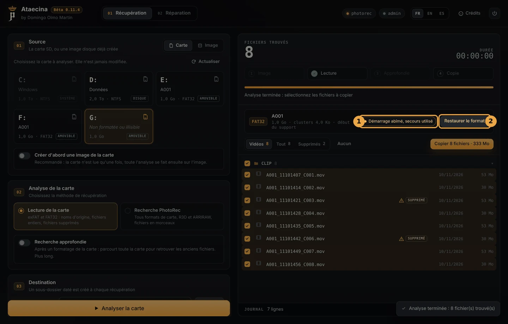
La fiche du volume indique Démarrage abîmé, secours utilisé. Les fichiers s'affichent normalement : copiez d'abord ceux qui comptent.
Restaurer le format réécrit le secteur de démarrage à partir de sa copie de secours, pour que Windows lise de nouveau la carte.
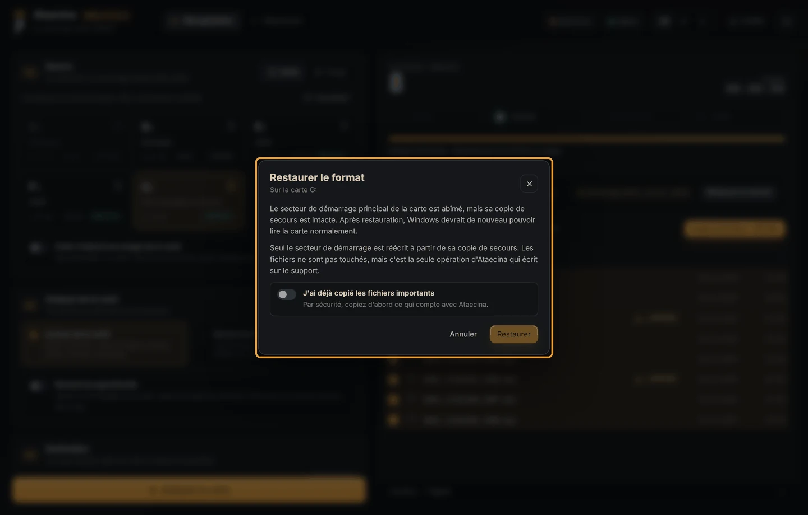
C'est la seule opération d'Ataecina qui écrit sur la carte. Seul le secteur de démarrage est réécrit, les fichiers ne sont pas touchés. Par sécurité, Ataecina vous demande de confirmer que vous avez déjà copié les fichiers importants avant d'activer le bouton Restaurer.
8. Récupération : image de la carte et recherche PhotoRec
Créer une image de la carte
Une carte qui commence à lâcher peut ne pas supporter plusieurs lectures. Activez Créer d'abord une image de la carte : Ataecina la copie entièrement dans un fichier image, en lisant les zones saines d'abord et les zones abîmées en dernier, selon la méthode de GNU ddrescue. Une copie interrompue peut être reprise. Toute l'analyse se fait ensuite sur l'image, la carte peut être rangée.
Prévoyez autant d'espace libre que la taille de la carte. Le champ Dossier image permet de choisir où l'enregistrer (vide = le dossier de destination).
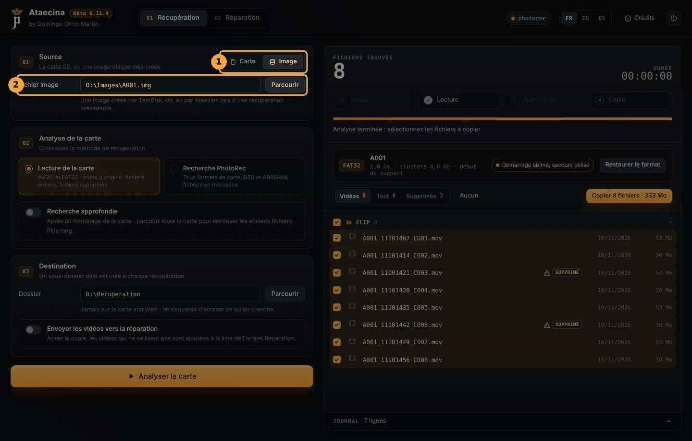
Pour analyser une image existante, choisissez Image (1) dans la source, puis indiquez le fichier image (2) : une image créée par Ataecina, par TestDisk ou par dd.
Recherche PhotoRec
Pour les cas où la lecture de la carte ne suffit pas : système de fichiers détruit, format de carte inconnu, fichiers éparpillés en morceaux. PhotoRec cherche les vidéos directement dans les données brutes de la carte. Il faut que PhotoRec soit installé (section 3).
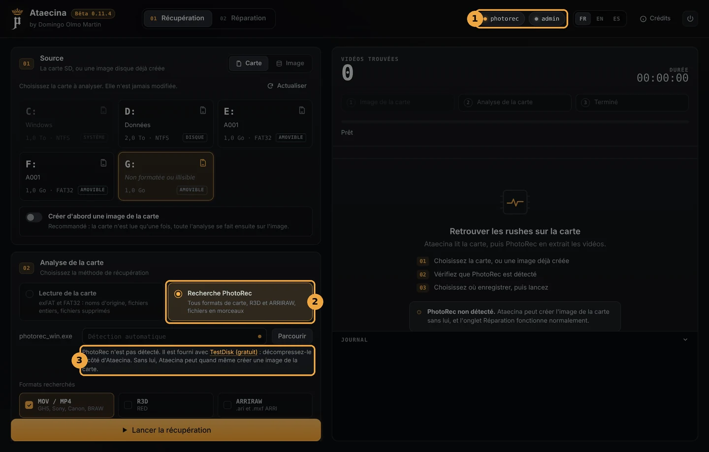
La pastille photorec doit être verte.
Choisissez la méthode Recherche PhotoRec.
Si PhotoRec n'est pas détecté, Ataecina l'indique ici, avec un lien vers TestDisk. Vous pouvez aussi indiquer l'emplacement de photorec_win.exe dans le champ au-dessus.
Choisissez les formats recherchés (MOV / MP4, R3D, ARRIRAW), puis cliquez sur Lancer la récupération. Les vidéos apparaissent au fur et à mesure. PhotoRec ne retrouve pas les noms d'origine, et les fichiers en morceaux ont souvent besoin d'une réparation : à la fin, Ataecina propose d'envoyer les MOV vers l'onglet Réparation.
9. Réparation des MOV et MP4 cassés
Un MOV ou un MP4 contient les images et un index qui dit où elles se trouvent. Si la caméra s'éteint pendant l'enregistrement, l'index n'est jamais écrit et le fichier ne s'ouvre plus. untrunc reconstruit cet index en s'appuyant sur un rush sain de référence. Il faut untrunc et FFmpeg (section 3).
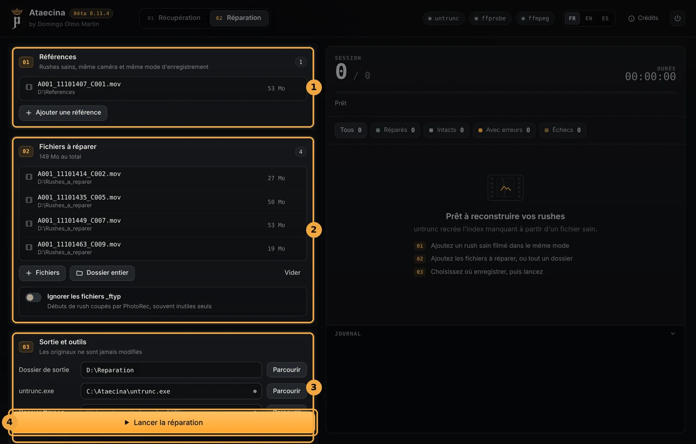
Références : ajoutez un ou plusieurs rushes sains, de quelques secondes suffisent, filmés avec la même caméra et le même mode d'enregistrement (résolution, cadence, codec, débit) que les fichiers perdus. C'est la condition de réussite la plus importante.
Fichiers à réparer : ajoutez les fichiers un par un (Fichiers) ou un dossier entier (Dossier entier, par exemple la sortie de PhotoRec). L'option Ignorer les fichiers _ftyp écarte les débuts de rush coupés par PhotoRec, souvent inutiles seuls.
Sortie et outils : le dossier de sortie où seront écrits les fichiers réparés, et l'emplacement des outils si Ataecina ne les trouve pas seul. Vérification complète décode chaque fichier réparé en entier avec ffmpeg pour compter les erreurs (plus long, plus sûr).
Cliquez sur Lancer la réparation.
Pour chaque fichier, Ataecina vérifie d'abord s'il se lit déjà. Sinon, il essaie untrunc avec chaque référence, en mode normal puis en mode pas à pas, et garde le meilleur résultat.
Le bilan : Réparés, Intacts, Avec erreurs, Échecs. Un clic sur une catégorie filtre les résultats. Ouvrir la sortie affiche le dossier de sortie.
Une vignette par fichier, avec sa durée récupérée :
RÉPARÉ : reconstruit, enregistré sous <nom>_repare.mov ;
INTACT : se lisait déjà, copié tel quel ;
ERREURS : reconstruit, mais des erreurs de décodage subsistent ;
ÉCHEC : aucune référence n'a permis de le réparer. Essayez une autre référence, filmée exactement dans le même mode.
Les originaux ne sont jamais modifiés. Le dossier de sortie contient aussi journal.csv (le bilan de chaque fichier, à ouvrir dans un tableur) et un dossier logs avec le détail de chaque essai d'untrunc.
10. Questions fréquentes
La réparation ne démarre pas : « untrunc.exe introuvable ».
untrunc n'est pas à côté de Ataecina.exe, ou ses fichiers .dll manquent. Voir la section 3.
La pastille photorec reste rouge.
Le dossier de TestDisk doit être décompressé, et rangé entier à côté de Ataecina.exe (ou dans tools). Sinon, indiquez le chemin de photorec_win.exe dans le champ prévu.
Ma carte n'apparaît pas dans la liste.
Cliquez sur Actualiser. Vérifiez qu'Ataecina tourne en administrateur. Si Windows ne voit pas du tout la carte (même pas dans l'Explorateur), le lecteur ou la carte peut être en cause : essayez un autre lecteur.
Ataecina fonctionne-t-il sur Mac ?
Non, Ataecina est pour Windows uniquement.
Quelles cartes Ataecina sait-il lire ?
La lecture de la carte gère exFAT et FAT32, les formats de la quasi-totalité des cartes de caméra. Pour les autres cas, la recherche PhotoRec fonctionne avec tous les formats de carte.
Un fichier réparé est plus court que prévu.
untrunc récupère tout ce qui est exploitable. Si la fin du fichier n'a jamais été écrite sur la carte, elle ne peut pas être reconstruite.
11. Avertissement et licence
Ataecina est un outil d'aide à la récupération et à la réparation de médias. Il est fourni « en l'état », sans aucune garantie : la récupération n'est jamais garantie, et l'auteur ne saurait être tenu responsable de toute perte, corruption ou suppression de données. Pour des rushes irremplaçables sur une carte physiquement endommagée, adressez-vous à un professionnel de la récupération de données avant toute manipulation.
untrunc, FFmpeg et TestDisk / PhotoRec restent la propriété de leurs auteurs et sont distribués sous leur propre licence.
⚠ Lee esto primero: Ataecina necesita programas complementarios.
untrunc, FFmpeg y PhotoRec no vienen incluidos con Ataecina. Descárgalos desde su web oficial y colócalos en la misma carpeta que Ataecina.exe. Sin ellos, la reparación no arranca y la búsqueda PhotoRec no está disponible. Ver la sección 3.
1. Presentación
Ataecina devuelve el material perdido. Sirve en dos situaciones:
Recuperación: una tarjeta de cámara se ha vaciado, se ha formateado por error o Windows ya no la lee. Ataecina lee la tarjeta por sí mismo (exFAT y FAT32), encuentra los archivos borrados y los de una tarjeta reformateada, puede restaurar el formato de una tarjeta dañada y recurre a PhotoRec para los casos más difíciles.
Reparación: un rush MOV o MP4 ya no se abre, a menudo porque la cámara se apagó en plena grabación. Con untrunc y un rush sano de referencia, Ataecina reconstruye el índice que falta.
Los archivos originales y la tarjeta nunca se modifican, salvo si pides expresamente restaurar el formato (sección 7). Ataecina es gratuito, de código abierto (licencia MIT), para Windows.
Ataecina es una diosa de la antigua península ibérica, a menudo interpretada como «la Renacida». Como ella, este programa devuelve a la luz imágenes que se creían perdidas.
Sin instalación: guárdalo en una carpeta propia, por ejemplo C:\Ataecina\
Ataecina_x.y.z_x64-setup.exe o .msi
Instalador clásico
Nuestro consejo: la versión portable. La guardas en su propia carpeta y pones los programas complementarios justo al lado (sección 3). Con el instalador, el ejecutable queda en la carpeta de instalación (normalmente en C:\Program Files\), donde Windows pide permisos de administrador para añadir archivos.
Primer arranque. La app aún no está firmada: Windows muestra un aviso una vez. Haz clic en «Más información» y luego en «Ejecutar de todas formas».
Permisos de administrador. Leer una tarjeta directamente requiere permisos de administrador. Si hace falta, Ataecina muestra una franja y propone reiniciarse como administrador; Windows te pide que lo confirmes. La etiqueta admin, arriba a la derecha, pasa a verde.
3. Instalar los programas complementarios (imprescindible)
Ataecina utiliza tres programas gratuitos que no vienen con él. Siguen siendo propiedad de sus autores: descárgalos siempre desde su web oficial.
la carpeta testdisk-x.yentera (contiene photorec_win.exe y sus archivos)
Dónde colocarlos
Colócalos en la misma carpeta que Ataecina.exe. Es el primer sitio donde Ataecina los busca:
C:\Ataecina\
├── Ataecina.exe
├── untrunc.exe ← con los archivos .dll que trae untrunc
├── *.dll
├── ffmpeg.exe
├── ffprobe.exe
└── testdisk-7.2\ ← la carpeta de TestDisk tal cual
├── photorec_win.exe
└── …
Si prefieres tenerlo ordenado, también funciona una subcarpeta tools junto a Ataecina.exe, con una carpeta por programa:
C:\Ataecina\
├── Ataecina.exe
└── tools\
├── untrunc\ (untrunc.exe y sus .dll)
├── ffmpeg\bin\ (ffmpeg.exe, ffprobe.exe)
└── testdisk-7.2\ (photorec_win.exe…)
Dos reglas:
No separes nunca un programa de sus archivos .dll. untrunc y PhotoRec no arrancan sin ellos. Copia todo el contenido del archivo comprimido, no solo el .exe.
Descomprime los archivos (clic derecho, «Extraer todo»): Ataecina no mira dentro de un .zip.
Ataecina también encuentra las herramientas ya instaladas en el PATH de Windows. Y si las tienes en otro sitio, puedes indicar su ubicación a mano: campos untrunc.exe y Carpeta de ffmpeg de la pestaña Reparación, campo photorec_win.exe de la búsqueda PhotoRec.
Comprobar que todo se detecta
Arriba a la derecha, unas etiquetas indican el estado de cada herramienta: verde = encontrada, roja = no encontrada.
Sin las herramientas, la pestaña Reparación muestra etiquetas rojas (1) y el campo untrunc.exe indica que no encuentra nada (2):
Si lanzas la reparación de todos modos, Ataecina se detiene con un mensaje claro (1), por ejemplo «untrunc.exe no encontrado»:
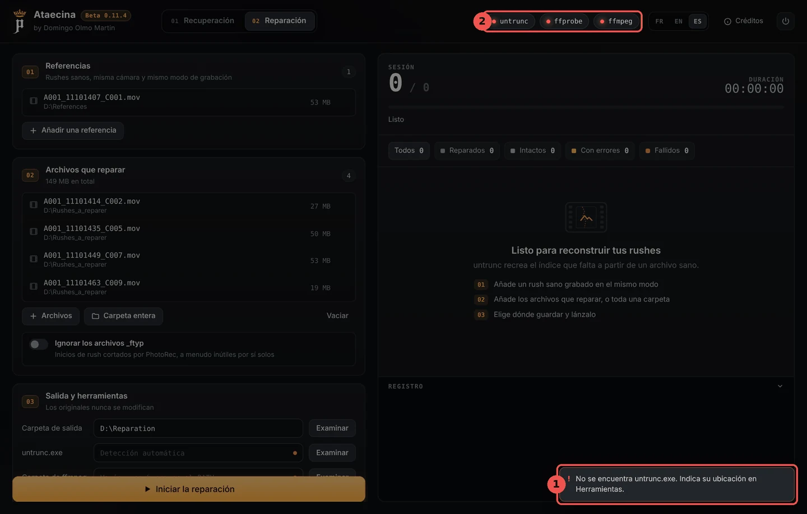
Cuando las herramientas están junto al ejecutable, las etiquetas pasan a verde (1) y se muestra la ruta encontrada (2). Si siguen en rojo, cierra y vuelve a abrir Ataecina.
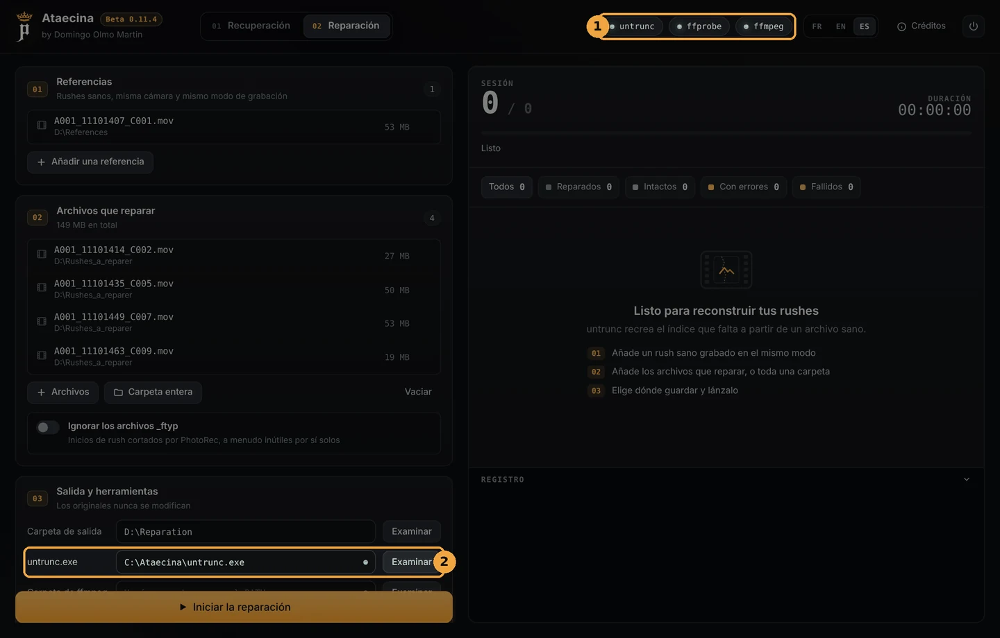
En la pestaña Recuperación, la etiqueta photorec funciona igual:
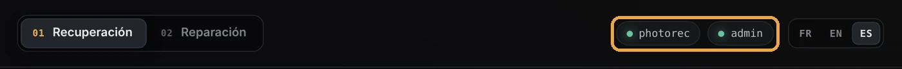
Lo que funciona sin las herramientas: la lectura de la tarjeta, la búsqueda profunda, la copia de los archivos encontrados, la restauración del formato y la creación de una imagen de la tarjeta. Lo que no funciona: la búsqueda PhotoRec (sin PhotoRec) y toda la reparación (sin untrunc y FFmpeg).
4. Antes de empezar: buenos hábitos
No escribas nada más en la tarjeta. No grabes con ella, no la formatees, no copies nada en ella. Cada escritura puede sobrescribir un rush todavía recuperable.
Si Windows propone formatear la tarjeta, dile que no.
Elige siempre un destino en otro disco que la tarjeta analizada. Ataecina lo recuerda debajo del campo Destino.
Para una tarjeta dañada, crea primero una imagen (sección 8): la tarjeta se lee una sola vez y todo el trabajo se hace después sobre la imagen.
5. Recuperación: leer la tarjeta
Es el método que hay que probar primero. Ataecina lee por sí mismo el sistema de archivos exFAT o FAT32 de la tarjeta, sin escribir nada en ella, y recupera las carpetas y los nombres originales, incluidos los archivos borrados.
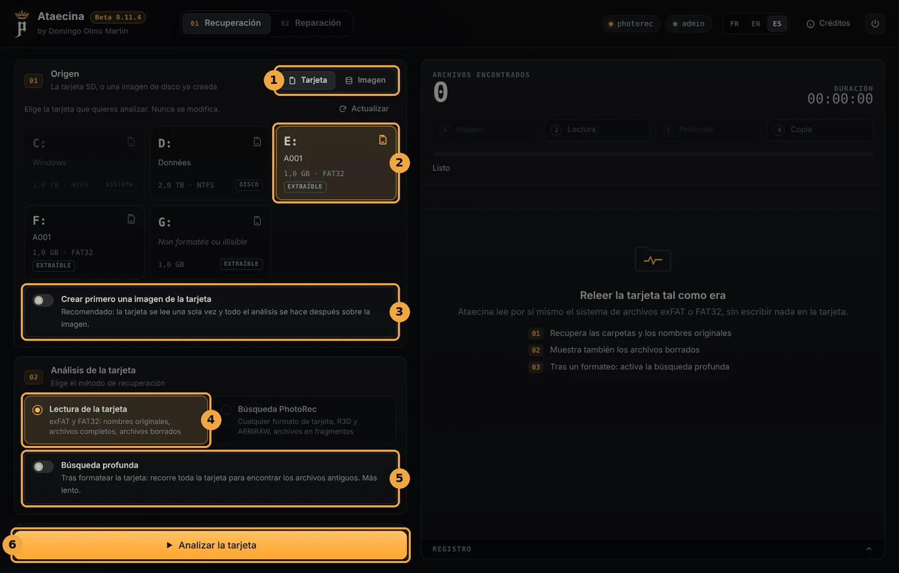
Origen: Tarjeta para una tarjeta en el lector, Imagen para una imagen de disco ya creada.
Elige la tarjeta en la lista. Los discos del sistema aparecen atenuados. Si la tarjeta no aparece, haz clic en Actualizar.
Crear primero una imagen de la tarjeta: recomendado si la tarjeta parece dañada (sección 8).
Método: Lectura de la tarjeta.
Búsqueda profunda: solo después de un formateo (sección 6).
Comprueba el Destino (cada recuperación crea allí una subcarpeta con fecha) y haz clic en Analizar la tarjeta.
Elegir los archivos que copiar
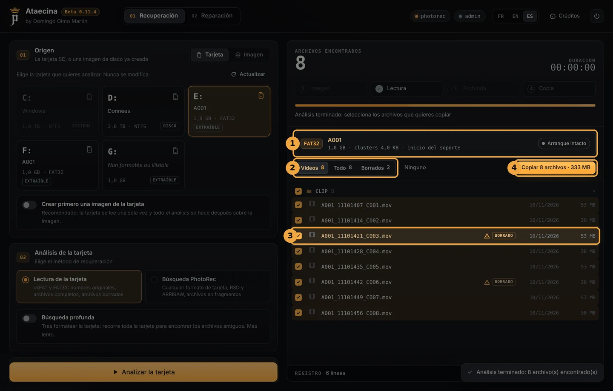
La ficha del volumen: formato (exFAT o FAT32), nombre, tamaño y estado del sector de arranque.
Los filtros: Vídeos, Todo, Borrados (y Recuperados tras una búsqueda profunda). Ninguno / Todos desmarca o marca todo.
Los archivos borrados llevan la marca BORRADO, con un triángulo de aviso: sus datos pueden haberse sobrescrito en parte desde entonces.
Copiar copia los archivos marcados al destino. El botón indica su número y su tamaño.
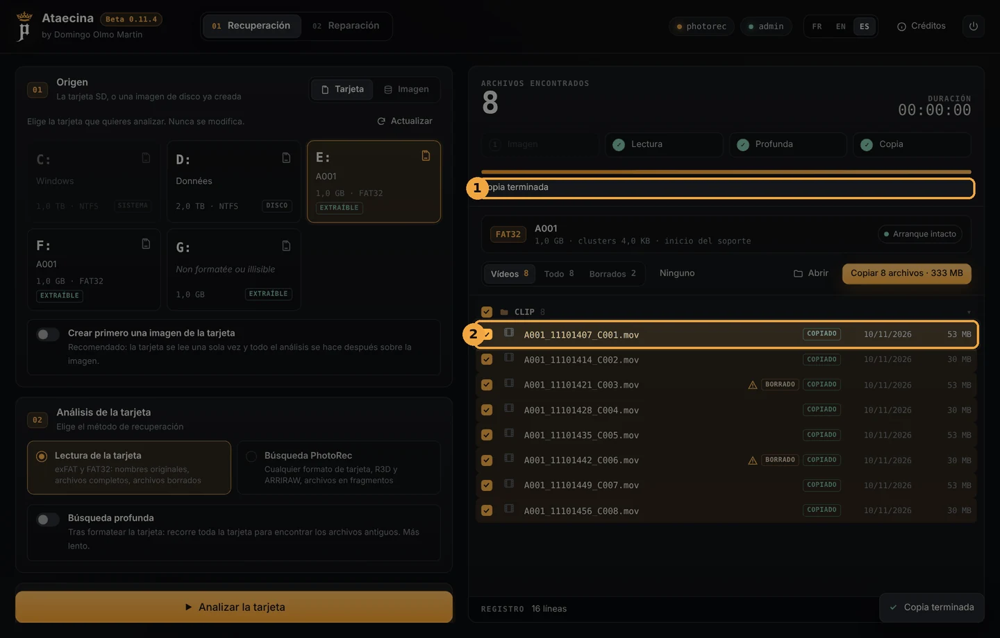
Al terminar la copia (1), cada archivo tiene un estado (2): COPIADO, POR REPARAR (el archivo se ha copiado pero no se reproduce) o ERROR. Abrir muestra la carpeta de copia.
La opción Enviar los vídeos a reparación (debajo de Destino) añade directamente los vídeos que no se reproducen a la lista de la pestaña Reparación.
6. Recuperación: tarjeta formateada por error
Después de un formateo, la tarjeta parece vacía: la lectura simple no encuentra nada. Activa la búsqueda profunda y vuelve a lanzar el análisis.
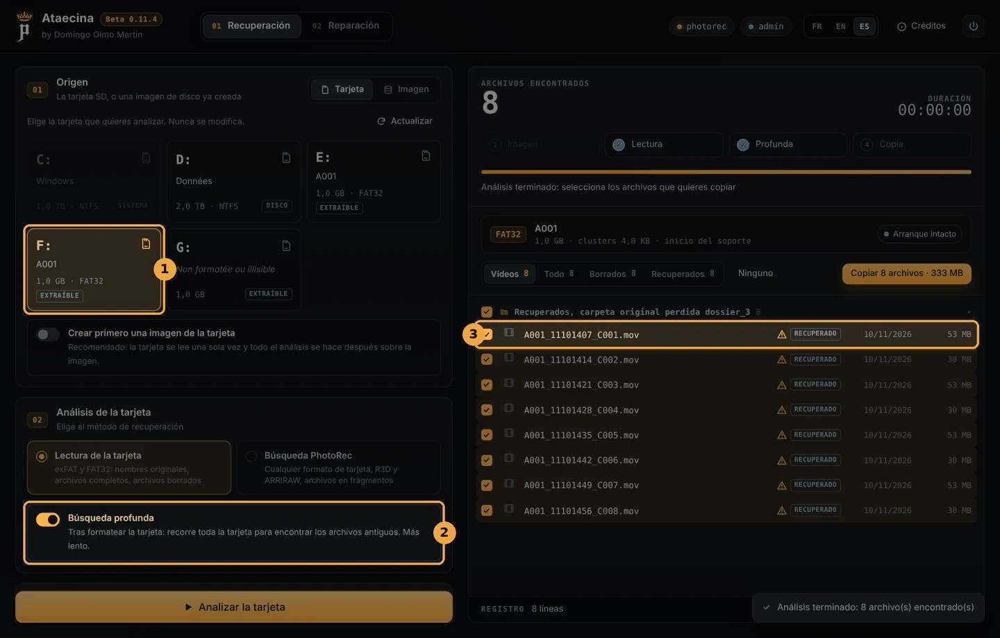
Elige la tarjeta formateada.
Activa Búsqueda profunda. Ataecina recorre toda la tarjeta en busca de las antiguas entradas de archivos. Tarda más.
Los archivos encontrados llevan la marca RECUPERADO y se agrupan en «Recuperados, carpeta original perdida». Sus nombres originales suelen conservarse, pero la carpeta original se ha perdido y se supone que sus datos están en un solo bloque: compruébalos después de copiarlos.
Si la búsqueda profunda no da resultado, prueba la búsqueda PhotoRec (sección 8).
7. Recuperación: tarjeta ilegible, restaurar el formato
Cuando Windows ya no reconoce una tarjeta («el disco no está formateado»), a menudo es su sector de arranque el que está dañado. Las tarjetas exFAT y FAT32 guardan una copia de seguridad de él: Ataecina la usa para leer la tarjeta igualmente.
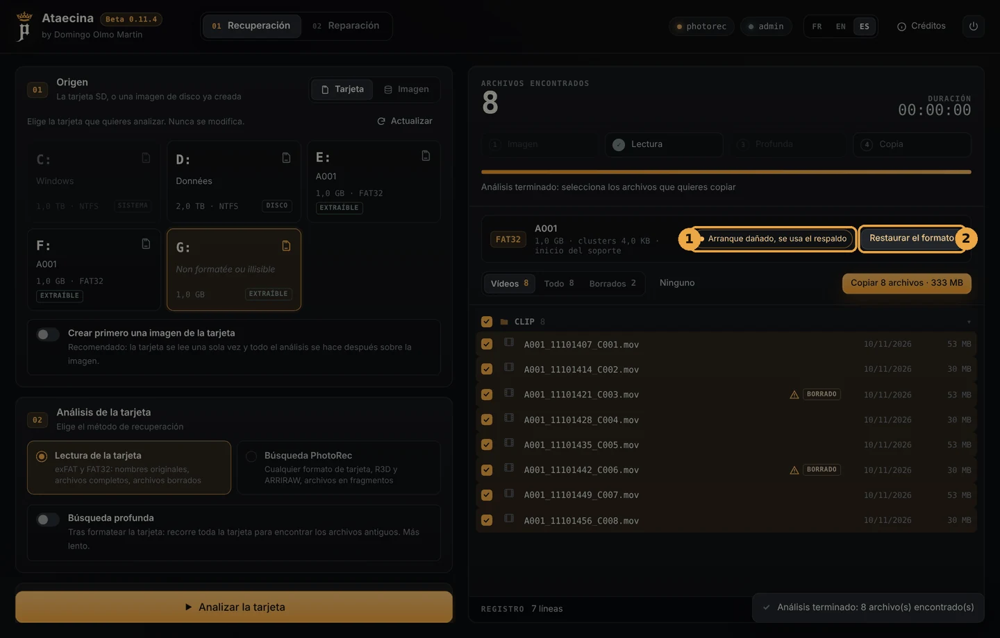
La ficha del volumen indica Arranque dañado, se usa el respaldo. Los archivos se muestran con normalidad: copia primero los que importan.
Restaurar el formato reescribe el sector de arranque a partir de su copia de seguridad, para que Windows vuelva a leer la tarjeta.
Es la única operación de Ataecina que escribe en la tarjeta. Solo se reescribe el sector de arranque, los archivos no se tocan. Por seguridad, Ataecina te pide que confirmes que ya has copiado los archivos importantes antes de activar el botón Restaurar.
8. Recuperación: imagen de la tarjeta y búsqueda PhotoRec
Crear una imagen de la tarjeta
Una tarjeta que empieza a fallar puede no aguantar varias lecturas. Activa Crear primero una imagen de la tarjeta: Ataecina la copia entera en un archivo de imagen, leyendo primero las zonas sanas y al final las dañadas, con el método de GNU ddrescue. Una copia interrumpida se puede reanudar. Todo el análisis se hace después sobre la imagen y la tarjeta puede guardarse.
Prevé tanto espacio libre como el tamaño de la tarjeta. El campo Carpeta de imagen permite elegir dónde guardarla (vacío = la carpeta de destino).
Para analizar una imagen existente, elige Imagen (1) en el origen e indica el archivo de imagen (2): una imagen creada con Ataecina, TestDisk o dd.
Búsqueda PhotoRec
Para los casos en los que la lectura de la tarjeta no basta: sistema de archivos destruido, formato de tarjeta desconocido, archivos dispersos en fragmentos. PhotoRec busca los vídeos directamente en los datos en bruto de la tarjeta. PhotoRec tiene que estar instalado (sección 3).
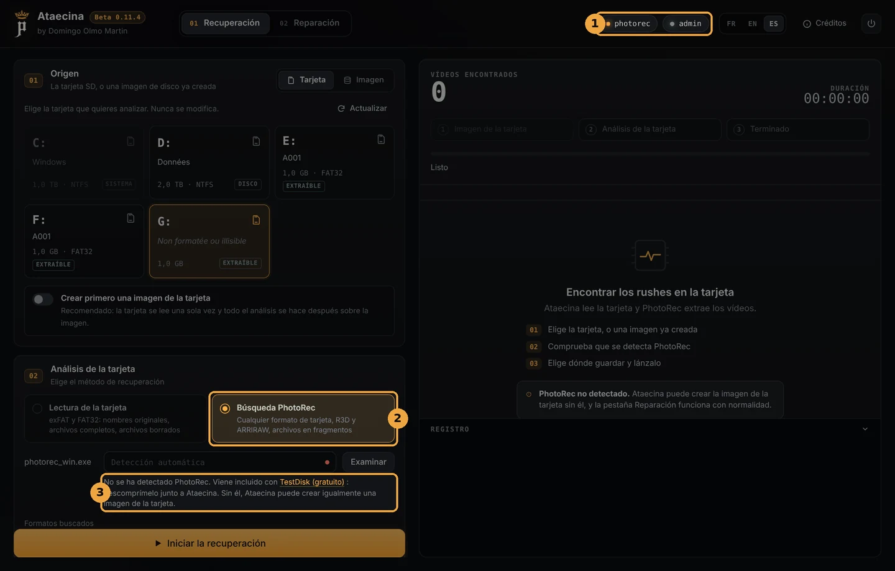
La etiqueta photorec debe estar en verde.
Elige el método Búsqueda PhotoRec.
Si no se detecta PhotoRec, Ataecina lo indica aquí, con un enlace a TestDisk. También puedes indicar la ubicación de photorec_win.exe en el campo de arriba.
Elige los formatos buscados (MOV / MP4, R3D, ARRIRAW) y haz clic en Iniciar la recuperación. Los vídeos aparecen a medida que se encuentran. PhotoRec no recupera los nombres originales, y los archivos en fragmentos a menudo necesitan reparación: al final, Ataecina propone enviar los MOV a la pestaña Reparación.
9. Reparación de MOV y MP4 rotos
Un MOV o un MP4 contiene las imágenes y un índice que dice dónde están. Si la cámara se apaga durante la grabación, el índice nunca se escribe y el archivo ya no se abre. untrunc reconstruye ese índice basándose en un rush sano de referencia. Hacen falta untrunc y FFmpeg (sección 3).
Referencias: añade uno o varios rushes sanos, bastan unos segundos, grabados con la misma cámara y el mismo modo de grabación (resolución, cadencia, códec, bitrate) que los archivos perdidos. Es la condición de éxito más importante.
Archivos que reparar: añade los archivos uno a uno (Archivos) o una carpeta entera (Carpeta entera, por ejemplo la salida de PhotoRec). La opción Ignorar los archivos _ftyp descarta los inicios de rush cortados por PhotoRec, a menudo inútiles por sí solos.
Salida y herramientas: la carpeta de salida donde se escribirán los archivos reparados y la ubicación de las herramientas si Ataecina no las encuentra solo. Verificación completa decodifica entero cada archivo reparado con ffmpeg para contar los errores (más lento, más seguro).
Haz clic en Iniciar la reparación.
Para cada archivo, Ataecina comprueba primero si ya se reproduce. Si no, prueba untrunc con cada referencia, en modo normal y después en modo paso a paso, y se queda con el mejor resultado.
El balance: Reparados, Intactos, Con errores, Fallidos. Un clic en una categoría filtra los resultados. Abrir la salida muestra la carpeta de salida.
Una miniatura por archivo, con la duración recuperada:
REPARADO: reconstruido, guardado como <nombre>_repare.mov;
INTACTO: ya se reproducía, copiado tal cual;
ERRORES: reconstruido, pero quedan errores de decodificación;
FALLO: ninguna referencia ha permitido repararlo. Prueba con otra referencia grabada exactamente en el mismo modo.
Los originales nunca se modifican. La carpeta de salida contiene también journal.csv (el balance de cada archivo, para abrir en una hoja de cálculo) y una carpeta logs con el detalle de cada intento de untrunc.
10. Preguntas frecuentes
La reparación no arranca: «untrunc.exe no encontrado».
untrunc no está junto a Ataecina.exe, o le faltan sus archivos .dll. Ver la sección 3.
La etiqueta photorec sigue en rojo.
La carpeta de TestDisk tiene que estar descomprimida y colocada entera junto a Ataecina.exe (o en tools). Si no, indica la ruta de photorec_win.exe en el campo previsto.
Mi tarjeta no aparece en la lista.
Haz clic en Actualizar. Comprueba que Ataecina se ejecuta como administrador. Si Windows no ve la tarjeta en absoluto (ni siquiera en el Explorador), el problema puede ser el lector o la tarjeta: prueba con otro lector.
¿Ataecina funciona en Mac?
No, Ataecina es solo para Windows.
¿Qué tarjetas sabe leer Ataecina?
La lectura de la tarjeta admite exFAT y FAT32, los formatos de casi todas las tarjetas de cámara. Para los demás casos, la búsqueda PhotoRec funciona con cualquier formato de tarjeta.
Un archivo reparado es más corto de lo previsto.
untrunc recupera todo lo aprovechable. Si el final del archivo nunca se llegó a escribir en la tarjeta, no se puede reconstruir.
11. Aviso y licencia
Ataecina es una herramienta de ayuda para recuperar y reparar medios. Se ofrece «tal cual», sin ninguna garantía: la recuperación nunca está garantizada y el autor no se hace responsable de ninguna pérdida, corrupción o eliminación de datos. Para material irremplazable en una tarjeta dañada físicamente, acude a un profesional de recuperación de datos antes de hacer nada.
untrunc, FFmpeg y TestDisk / PhotoRec siguen siendo propiedad de sus autores y se distribuyen con su propia licencia.